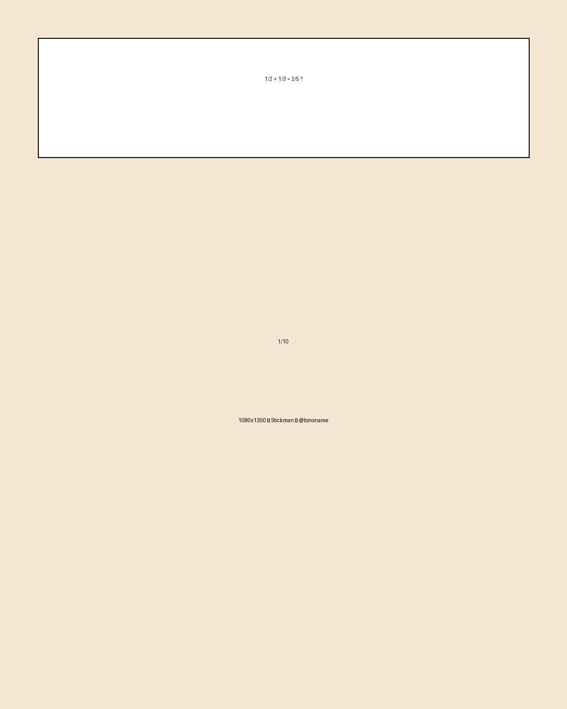
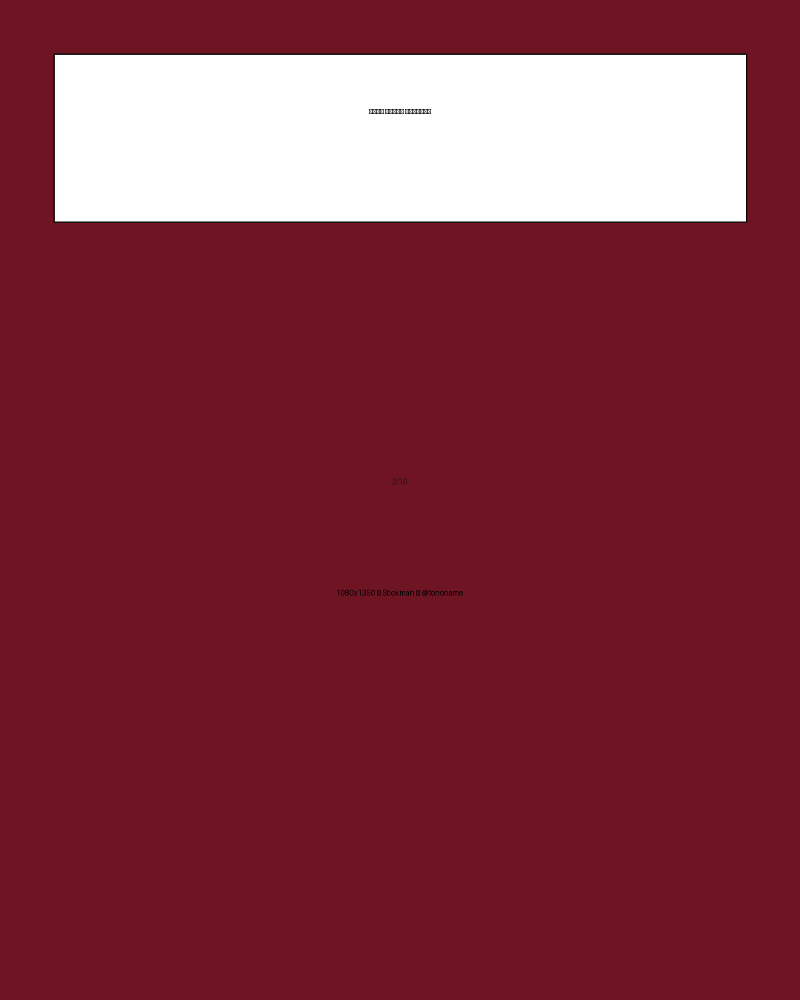
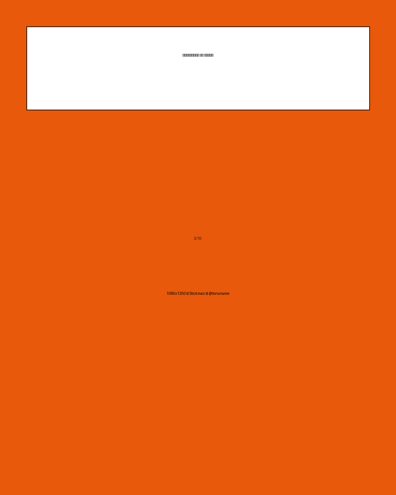
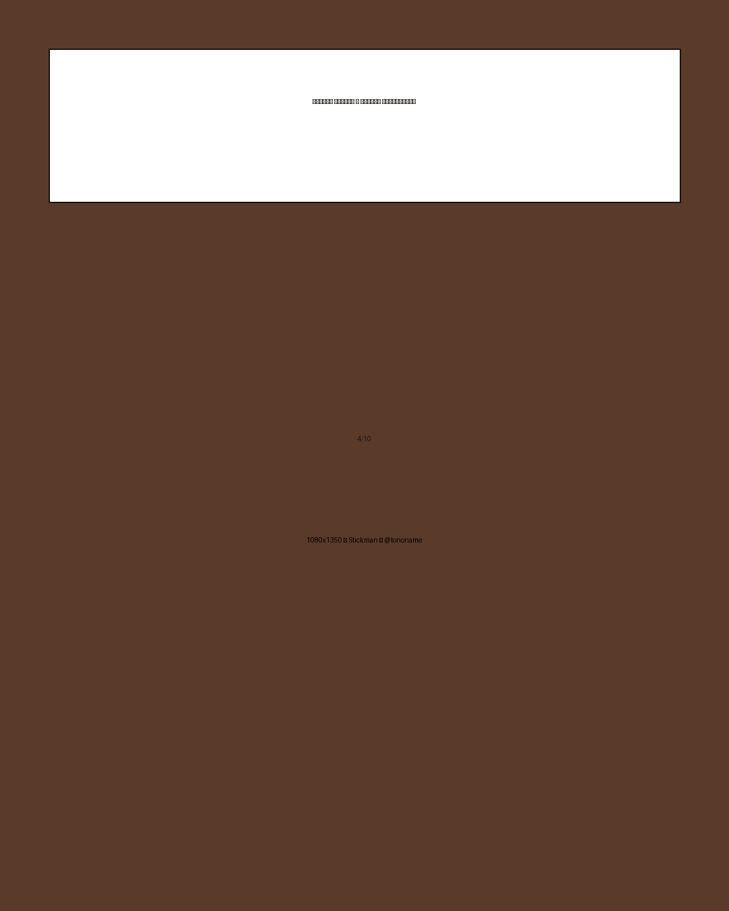
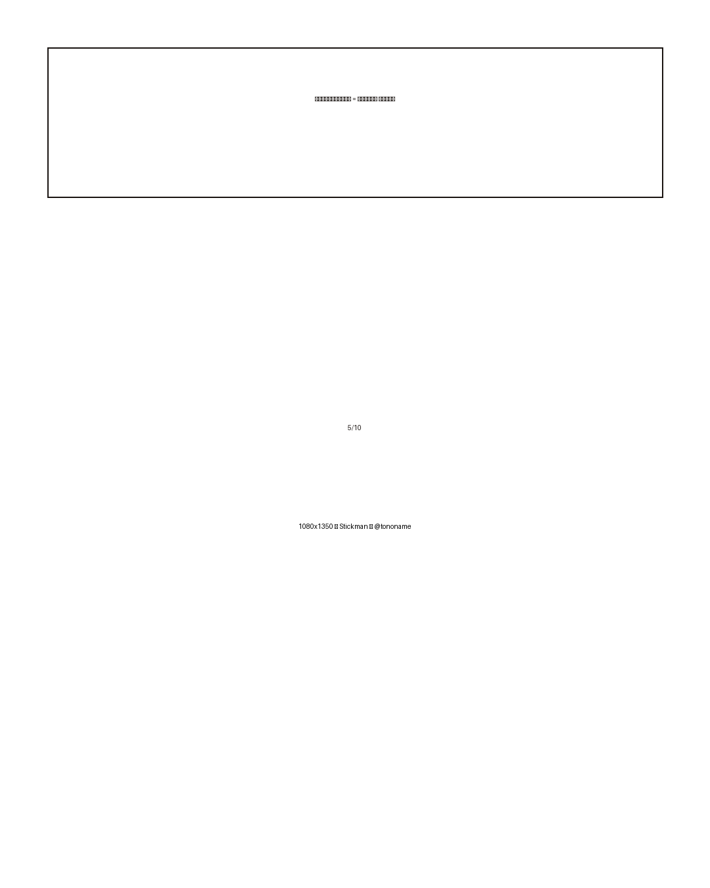
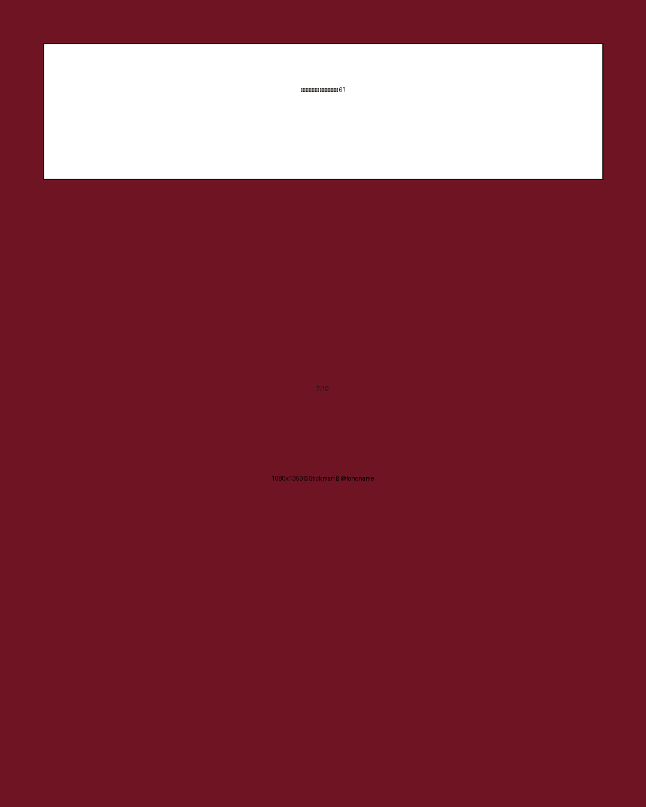
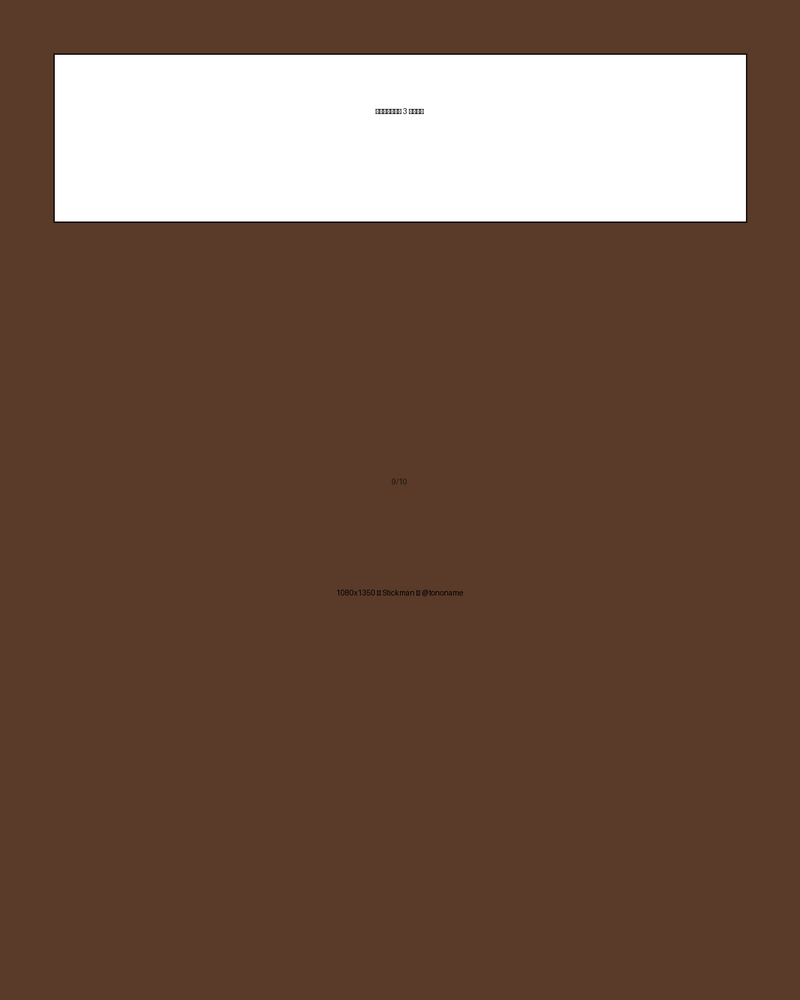

10 слайдов 1080×1350, палитра 6 цветов, 3 шрифта, единый stickman-герой, мат.проверка Python, экспорт PNG + Canva-шаблон. Первая карусель «1/2+1/3=2/5?» уже собрана.
★ Открыть Пингли Studio Финальный пакет






JOURNAL.md — живой документ. После каждой карусели фиксируем гипотезу и метрики. Первый урок появится через неделю после публикации пилотной карусели.
ETAP_1_IDEI.md — 6 проверенных тем с оценкой по узнаваемости, силе хука, виральности и мат.риску. Рекомендован старт с №1 (пицца) и №3 (скидки).
RASKADROVKA.md — 10 слайдов с функцией, мыслью, действием героя, метафорой и переходом. Два сценария: пицца-расследование и детектив.
Таблица 5 колонок в PACKAGE.md + math_check.py (Fraction, НОК). Все 🟢. Красный только у демо-ошибки 2/5.
Заголовки, 25 слов, реплики, 3 хука, CTA @tononame — всё в PACKAGE.md. Промпты для Midjourney/SD/Firefly без текста (текст в Canva).
canva-templates/README.md — пошаговая схема 1080×1350, поля 72px, шрифты Unbounded/Manrope/Caveat, чередование фонов.
carousel-studio/studio.html — интерактивный редактор: 1080×1350 Canvas, смена фонов, поз, экспорт PNG (отдельные файлы) и JSON пакета. Работает локально, без бэкенда.
CHECKLIST.md — 10 пунктов готовности. После публикации — 3 вывода в Журнал уроков и предложение оценить метрики через неделю.
1. Открой Пингли Studio — покрути слайды 1→10, поменяй заголовки, скачай PNG.
2. Выбери следующую тему из 6 идей (я подготовлю пакет №2 — «минус на минус» или «скидки»).
3. Загрузи 10 PNG в Instagram как карусель, добавь подпись из PACKAGE.md + хештеги.
4. Через неделю вернёмся к JOURNAL.md — зафиксируем метрики и прокачаем систему.